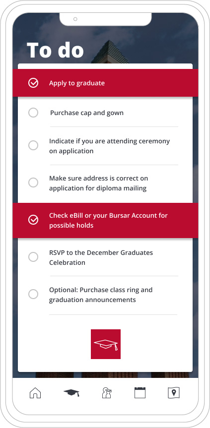
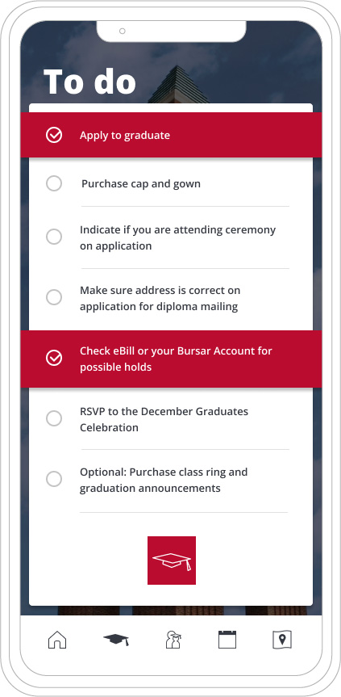

Ball State University
As part of my job at Ball State I have created a wide variety of both internal and public facing print and digital pieces, ranging from print advertisements, promotional banners and signs to video titles and lower thirds and even websites and native apps, all while maintaining and working within the University branding.
 
